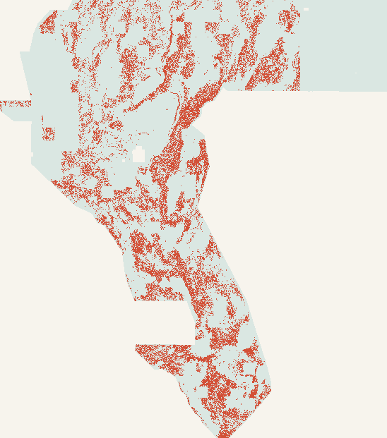

44,090 dots
D2.8 / H19-5 family mask before catalogue-halo cleanup.
Autonomous evidence gate · 26 October 2026
TIP1 is a genuinely distinct LiDAR fault-tip hypothesis, executed exactly once across three frozen arms. The file passes every format check. The science does not clear the efficacy or literal novelty gates.
Evidence date: 2026-10-26

Exact release artifact
The all-finite -zeros.tif directly addresses the prior portal rejection: every stored value is finite and inside [0,1].
Portfolio audit
These are each site's historical high claim, not authenticated scores. Every historical mask overlaps another focus-site mask by at least 97.58% within 3 pixels and is therefore non-unique under the owner's 70% rule.
| Site | Historical best file | Value / evidence | Max overlap | Unique? | Recommendation |
|---|---|---|---|---|---|
| 24 | gems24-h25-1-dotted-h19-5-d1-5-20261002-989f59505db1-nan.tif | 0.2477 OWNER-REPORTED | 100.00% | NO | DO NOT SUBMIT |
| 25 | gems25-dotted-h19-5-d2-8-20261002-e56ea318af89-nan.tif | 0.2600 OWNER-REPORTED | 100.00% | NO | DO NOT SUBMIT |
| 27 | gems27-topo-gap-closure-t-v2-on-d1-5-20261002-5512495c6bd1-nan.tif | 0.2449 OWNER-REPORTED | 98.02% | NO | DO NOT SUBMIT |
| 28 | gems28-h36-1-rung30-blind-r1-20261003-b531dae0a36f-nan.tif | 0.2710 OWNER-REPORTED | 100.00% | NO | DO NOT SUBMIT |
| 30 | gemsdoe30-d28-poisson300m-offcat-44090-20261003T233156Z-91eae1ca.tif | 0.2600 OWNER-REPORTED | 100.00% | NO | DO NOT SUBMIT |
| 31 | gemsdoe31-h27-4-solo-d28-20261004-8acb75e1-nan.tif | 0.2708 OWNER-REPORTED | 100.00% | NO | DO NOT SUBMIT |
| 32 | gemsdoe32-h33-h33-2-b2-20261004T220000Z-e5eb6e7e-zeros.tif | 0.2778 OWNER-REPORTED | 100.00% | NO | DO NOT SUBMIT |
| 33 | GEMSDOE33-h33d-analog-tip-stepover-r30-20261004-cb490425926e.tif | 0.2632 OWNER-REPORTED | 99.71% | NO | DO NOT SUBMIT |
| 36 | gemsdoe36-anderson-geothermal-pinn-38854-20261004T230000Z-9b9ea4e6-zeros.tif | 0.2750 OWNER-REPORTED | 97.58% | NO | DO NOT SUBMIT |
Machine-readable table, source refs and exact artifact links: nine_site_executive_summary.json.
H33-B2 forensics
The exact bytes prove ancestry. They do not prove why a hidden score moved or even which bytes were uploaded.
D2.8 / H19-5 family mask before catalogue-halo cleanup.
Every removed dot lies 100–200 m from the public catalogue. Zero dots were added.
An exact strict subset. Scientifically, it is not a new detector.
0.2778 remains unverified.Frozen experiment
All results are HOLDOUT-DTI from gems-segment-pooled-v1, 60,988 withheld positives, with 95% spatial-block bootstrap intervals. Arm B stayed primary even though its control was slightly higher.
B 95% CI [0.072872, 0.091733]. Benchmark 95% CI [0.151858, 0.180339].
main also contained the separately executed MVGZ negative lane and its audit download. It remains DO NOT SUBMIT and uses a different holdout evaluator/withheld count, so it is not compared numerically with TIP1. Open inherited MVGZ card →Source audit
The experiment uses a SHA-pinned GitHub mirror of a USGS 3DEP-derived feature stack. A verified mirror is not the same thing as an authenticated raw USGS download.
Stated source of the 1 m DEM tiles summarized into the 100 m LiDAR descriptor stack.
Official page ↗Official DOI 10.5066/P93LGLVQ; recorded for portfolio provenance, not used by TIP1.
DOI ↗INGENIOUS geothermal source recorded for the broader portfolio; not used by TIP1.
Official page ↗Competition and reference workflow. No authenticated submission receipt was available.
Competition ↗